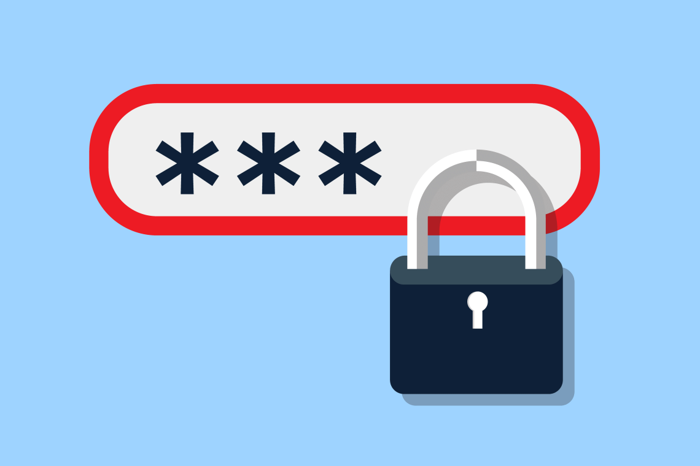

Because usernames and passwords are the most common method of authentication, we will dig a little deeper into the best practices for a password system. Passwords can be verified by the local system, such as by using a username/password with a local PC or an access code number for a digital door lock. Passwords can also be verified by using a remote server, such as when a domain user logs in to a workstation connected to a domain controller. The local system does not verify the password; the domain controller does.
The threat of security breaches has changed the whole concept of passwords from the days when they were simply used to keep another user from accessing your profile. Data has become an important form of currency throughout the world, so the need for password complexity has evolved. The first rule of data security, which most users will admit to breaking sometimes, is to never write down a password on paper and leave it in the desk or on a sticky note on the desk or monitor. Passwords need to be memorized or stored in a password manager utility where access is controlled by a single password. The second rule, which is also often broken, is to never use the same password for multiple different things. Some of the most recents hacks have involved two or more databases from online vendors, and the attackers were able to merge the information to develop usernames and passwords. Those using the same password for multiple accounts were most vulnerable.
Passwords can be verified by the local system, such as by using a username/password on a local PC or an access code number for a digital door lock. Passwords can also be verified by using a remote server, such as when a domain user logs in to a workstation connected to a domain controller. The local system does not verify the password; the domain controller does.
Passwords must be complex, containing a mixture of uppercase and lowercase letters, numbers, and symbols. Additionally, passwords should be long: they should be at least 6–8 characters in length, but more characters provide a more secure password. It is imperative to avoid dictionary words, as these are easier to guess, and consider using a passphrase if possible. One technique to create a strong password is to pick a song or poem and use the first letter from each word as the password, as well as incorporating some numbers and symbols. This makes a strong, hard-to-guess password.
The system administrator has the ability to configure the password system in Windows to create rules that the passwords must follow. These settings should be in line with company policy and should follow the best practices mentioned above, as well as adding some new requirements. One practice is requiring passwords to be renewed every 60 days. Setting a maximum password age eliminates threats from old access lists or former employees. The system can be set up to prompt users to change their passwords approximately 14 days prior to expiration. Also, the system administrator can set the system to require a minimum password length, such as six characters or 14 characters. There is an option to require complex passwords — passwords that require uppercase, lowercase, numeric, and symbolic characters. Another option is to prevent old passwords from being reused, with a setting that can dictate how many old passwords are remembered by the system. This is called password history. The system administrator can set the limit on password history up to 25 previous passwords in memory. Finally, if an attacker is trying to guess a user’s password, there is a setting that will prevent this by locking the user’s account if a certain number of unsuccessful logins occur within a certain period of time. For example, if four failed logins occur within 15 minutes, the system might require a 60-minute wait before letting the user log in (even if the user tries the correct password) or might require the system administrator to reset the password.

用戶身份驗證通常依賴於用戶提供用戶名和密碼，但是在現代網絡中，對安全性的需求正在改變這一要求。當用戶僅提供用戶名和密碼時，這被視為單因素身份驗證。在現代系統中，隨著對安全性的需求增加，對多種身份驗證的需求也在增加，例如兩因素身份驗證（至少）或多因素身份驗證。
有四種常見的身份驗證類別：
- 用戶知道的一些信息。
- 用戶擁有的東西。
- 用戶的東西。
- 用戶要做的事情。
用戶知道的東西通常被大多數係統使用，例如用戶提供用戶名，密碼或個人識別碼（PIN）。這也是攻擊者最容易克服的身份驗證，因為他們只需要猜測或收集用戶的知識即可獲得訪問權限。第二類是用戶擁有的東西，通常由用戶出示智能卡，安全令牌或RFID芯片來實現。第三類是用戶，通常指一些有關用戶的生物統計數據。這可能是用戶的指紋，視網膜掃描甚至語音驗證。第四個也是最後一個類別是用戶要做的事情，例如用戶簽名的外觀。這是用於工作站或網站訪問的非常少見的身份驗證方法，但在支付系統中大量使用，
為了確保高級別的安全性，許多工作站和網站現在都需要兩因素身份驗證。如本模塊前面所述，在國防部計算機系統中，要求用戶插入他們的CAC（公共訪問卡）（即智能卡），並輸入個人標識號以訪問系統。這種雙重身份驗證提供了用戶擁有的（智能卡）和用戶知道的東西（PIN），以對用戶進行身份驗證並將用戶登錄到Windows工作站。
密碼
由於用戶名和密碼是最常用的身份驗證方法，因此我們將對密碼系統的最佳做法進行更深入的研究。密碼可以通過本地系統進行驗證，例如通過在本地PC上使用用戶名/密碼或數字門鎖的訪問密碼。也可以使用遠程服務器來驗證密碼，例如當域用戶登錄到連接到域控制器的工作站時。本地系統不驗證密碼；域控制器可以。
從僅僅用於防止其他用戶訪問您的個人資料的那一天起，安全漏洞的威脅已經改變了整個密碼的概念。數據已成為全世界一種重要的貨幣形式，因此對密碼複雜性的需求也在不斷發展。多數用戶有時會中斷的數據安全性第一法則是，永遠不要在紙上寫下密碼並將其留在桌子上或桌子或顯示器的便籤上。密碼需要存儲或存儲在密碼管理器實用程序中，在該實用程序中，訪問權限由單個密碼控制。第二個規則也經常被打破，那就是永遠不要對多個不同的事物使用相同的密碼。最近發生的一些黑客攻擊涉及來自在線供應商的兩個或多個數據庫，攻擊者能夠合併信息以開髮用戶名和密碼。對多個帳戶使用相同密碼的用戶最容易受到攻擊。
密碼可以通過本地系統進行驗證，例如通過使用本地PC上的用戶名/密碼或數字門鎖的訪問密碼。也可以使用遠程服務器來驗證密碼，例如當域用戶登錄到連接到域控制器的工作站時。本地系統不驗證密碼；域控制器可以。
密碼必須是複雜的，包含大小寫字母，數字和符號的混合。此外，密碼應該很長：密碼長度至少應為6-8個字符，但是更多的字符可以提供更安全的密碼。必須避免使用字典單詞，因為這些單詞更容易猜測，並在可能的情況下考慮使用密碼短語。創建強密碼的一種技術是選擇一首歌曲或一首詩，並使用每個單詞的第一個字母作為密碼，並結合一些數字和符號。這樣就形成了一個很難猜測的強密碼。
系統管理員可以在Windows中配置密碼系統，以創建密碼必須遵循的規則。這些設置應符合公司政策，並應遵循上述最佳實踐，並添加一些新要求。一種做法是要求每60天更新一次密碼。設置最長密碼使用期限可以消除來自舊訪問列表或前員工的威脅。可以將系統設置為提示用戶在到期前約14天更改密碼。另外，系統管理員可以將系統設置為要求最小密碼長度，例如六個字符或14個字符。有一個選項要求使用複雜的密碼，即要求使用大寫，小寫，數字和符號字符的密碼。另一個選擇是通過設置可以指示系統記住多少個舊密碼的設置來防止舊密碼被重複使用。這稱為密碼歷史記錄。系統管理員可以設置密碼歷史記錄的限制，最多可以存儲25個先前的密碼。最後，如果攻擊者試圖猜測用戶的密碼，則可以進行設置，以防止在一定時間內發生一定數量的不成功登錄時鎖定用戶帳戶。例如，如果在15分鐘內發生了四次失敗的登錄，則係統可能需要等待60分鐘才能讓用戶登錄（即使用戶嘗試輸入正確的密碼），也可能需要係統管理員重置密碼。這稱為密碼歷史記錄。系統管理員可以設置密碼歷史記錄的限制，最多可以存儲25個先前的密碼。最後，如果攻擊者試圖猜測用戶的密碼，則可以進行設置，以防止在一定時間內發生一定數量的不成功登錄時鎖定用戶帳戶。例如，如果在15分鐘內發生了四次失敗的登錄，則係統可能需要等待60分鐘才能讓用戶登錄（即使用戶嘗試輸入正確的密碼），也可能需要係統管理員重置密碼。這稱為密碼歷史記錄。系統管理員可以設置密碼歷史記錄的限制，最多可以存儲25個先前的密碼。最後，如果攻擊者試圖猜測用戶的密碼，則可以進行設置，以防止在一定時間內發生一定數量的不成功登錄時鎖定用戶帳戶。例如，如果在15分鐘內發生了四次失敗的登錄，則係統可能需要等待60分鐘才能讓用戶登錄（即使用戶嘗試輸入正確的密碼），也可能需要係統管理員重置密碼。如果在一定時間內發生一定數量的失敗登錄，則可以通過鎖定用戶帳戶來防止這種情況的發生。例如，如果在15分鐘內發生了四次失敗的登錄，則係統可能需要等待60分鐘才能讓用戶登錄（即使用戶嘗試輸入正確的密碼），也可能需要係統管理員重置密碼。如果在一定時間內發生一定數量的失敗登錄，則可以通過鎖定用戶帳戶來防止這種情況的發生。例如，如果在15分鐘內發生了四次失敗的登錄，則係統可能需要等待60分鐘才能讓用戶登錄（即使用戶嘗試輸入正確的密碼），也可能需要係統管理員重置密碼。
P63 <<
Previous Next >> P65
Copyright © All rights reserved | This template is made with by Colorlib